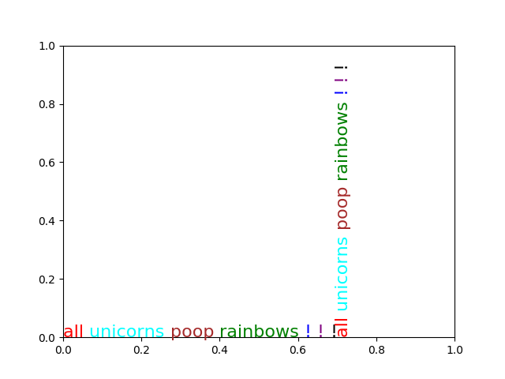

Version 3.0.3
Note
Click here to download the full example code
The example shows how to string together several text objects.
On the matplotlib-users list back in February 2012, Gökhan Sever asked the following question:
Is there a way in matplotlib to partially specify the color of a string?
Example:
plt.ylabel("Today is cloudy.") How can I show "today" as red, "is" as green and "cloudy." as blue?
Thanks.
Paul Ivanov responded with this answer:
import matplotlib.pyplot as plt
from matplotlib import transforms
def rainbow_text(x, y, strings, colors, ax=None, **kw):
"""
Take a list of ``strings`` and ``colors`` and place them next to each
other, with text strings[i] being shown in colors[i].
This example shows how to do both vertical and horizontal text, and will
pass all keyword arguments to plt.text, so you can set the font size,
family, etc.
The text will get added to the ``ax`` axes, if provided, otherwise the
currently active axes will be used.
"""
if ax is None:
ax = plt.gca()
t = ax.transData
canvas = ax.figure.canvas
# horizontal version
for s, c in zip(strings, colors):
text = ax.text(x, y, s + " ", color=c, transform=t, **kw)
text.draw(canvas.get_renderer())
ex = text.get_window_extent()
t = transforms.offset_copy(
text.get_transform(), x=ex.width, units='dots')
# vertical version
for s, c in zip(strings, colors):
text = ax.text(x, y, s + " ", color=c, transform=t,
rotation=90, va='bottom', ha='center', **kw)
text.draw(canvas.get_renderer())
ex = text.get_window_extent()
t = transforms.offset_copy(
text.get_transform(), y=ex.height, units='dots')
rainbow_text(0, 0, "all unicorns poop rainbows ! ! !".split(),
['red', 'cyan', 'brown', 'green', 'blue', 'purple', 'black'],
size=16)
plt.show()
Keywords: matplotlib code example, codex, python plot, pyplot Gallery generated by Sphinx-Gallery